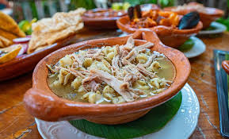

13.Guerrero

- Platillo: Pozole guerrerense
- Ingredientes: Maíz cacahuazintle, carne de cerdo o pollo, chile, lechuga, rábano.
- Historia: De raíces prehispánicas; se dice que Moctezuma lo consumía con carne humana en rituales.
- Dato curioso: En Guerrero se puede preparar blanco, verde o rojo, según la región.